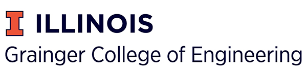

Table of Contents
Graduate Research
I am working with Paul Torrey's group at the University of Florida.
My main research interests lie in cosmological simulations of the universe. I am currently using the Illustris and IllustrisTNG (The Next Generation) simulation suites to analyze metallicity gradients of simulated galaxies to measure how they vary with mass and redshift.
What I am trying to determine is the 'break radius', the radius at which the metallicity gradient transitions from steep to flat. These median profiles below were created for mass bins with width 0.5 dex.

Note that this is a preliminary result and an updated version of this plot, or one similar to it, may be used in the final draft of the paper.
We plan to publish this work sometime in the Spring of 2022.
To learn more about the Illustris project please visit the Illustris Project website or the Illustris TNG Project website. If you have any questions about my research please email me
Teaching
| Course | Semester | Associated Professor(s) | |
|---|---|---|---|
| University of Florida | Ast 1022 - Astronomy Labratory | Spring 2022 | Paul Sell |
| Ast 1002 - Discovering the Universe | Fall 2021 | Paul Sell, Elizabeth Lada, Naibi Marinas | |
| University of Illinois | Astr 330 - Extrterrestrial Life | Spring 2021 | Xin Liu |
| Astr 330 - Extraterrestrial Life | Winter 2020/2021 | Leslie Loonie | |
| Astr 100 - Introduction to Astronomy | Fall 2020 | Amanda Winans | |
| Astr 150 - Killer Skies: Astro-Disasters | Fall 2020 | Bryan Dunne |
As the lab instructor for Astronomy 1022, I was basically an instructor for my own course. responsibilites included giving two lectures every week, conducting experiments, grading lab reports, and managing students. During my first semester, I also took on the role of revising the outdated lab manual for the course (see section below on Astronomy 1022 Lab Textbook). Additionally, during the summer of 2022, I plan on recreating and modifying the outdated computer lab software.
For all courses at the University of Illinois, I was employed as a Course Assistant. This title was given to undergraduates who were helping professors grade.
Astronomy 1022 Lab Textbook
During the Spring 2022 semester, I undertook the task of revising the new, tenth edition of the University Florida Astronomy 1022 textbook, "Hands-on Astronomy". This textbook functioned as a lab manual for each of the 22 different labs, all of which I had a hand in modernizing and helping overall functionality.
The textbook was originally compiled in 1997 and had sparsely been updated since that time. I translated the old versions of the textbook into LaTex, including recreating several figures with the Tikz package. Both of these quality of life changes added a dynamic quality to the textbook that should hopefully allow the Department of Astronomy to be able to continuously edit the textbook over the years.
The textbook is a required text for all students enrolled in the Astronomy 1022 lab course. To this day, students (and instructors) are still benefitting from the revisions that I implemented. This textbook is available for purchase at the "Target Copy" store on University Ave. in Gainesville. Here are the first pages of the tenth edition book as they would have appeared for the Spring 2022 semester.
Kika Silva Pla Planetarium
Starting in the Fall Semester of 2021, I work at the Kika Silva Pla Planetarium at Santa Fe College in Gainesville, FL. I work there alongside James Albury, the planetarium director and star of "The Sky Above Us" webseries.
I engage in science outreach to a wide variety of audiences. The planetarium hosts weekly events on Fridays and Saturdays (starting 11/12/2021) for a series of different shows. The show topics range from educational to entertaining and all serve to get the public more interested in space and astronomy.

One of the earliest projects that I worked on at KSP Planetarium was to add an accessible option for many of the shows with closed captioning. As a person with a hearing disability this was certainly something that I felt was important that the planetarium had and something that I felt it didn't when I arrived.
My favorite accomplishment during my time at the Planetarium was learning to perform "Florida Skies", an hour long show giving the public a tour of the night-time sky of Gainesville. Within my first eight months of working at the planetarium, I was able to perform this tour with our CHRONOS-II optical-mechanical projector.

Show Credits
Florida Skies - "Host", "Planetarium Staff"
Holtz - The Planets - "Production Crew"
Dynamic Earth - "Closed Captions for KSP"
More Info
For more information about the planetarium, including when the next shows are, please visit the Kika Silva Pla Website. To contact me directly about anything regarding the planetarium please email me
Center for Academic Resources in Engineering (CARE) UIUC
Walk-in Tutoring
CARE hosts daily tutoring sessions, typically from noon to midnight, where any student can come into our walk-in space and ask questions. Tutors are rotated in and out during these times and can answer questions on a myriad of different topics. During my time as a CARE tutor, I was able to answer questions on the courses found here.
Exam Review Sessions
In addition to walk-in tutoring, CARE hosts exam-review sessions for a number of different freshman- and sophomore-level courses. These events are office hours sytle: two hours in length where students can come and ask a small team of tutors any questions about what they are working on in a particular course.
During the summer before my senior year of undergrad, I aided in creating new worksheets for the University of Illinois' College of Engineering's tutoring center. All the worksheets were created in LaTeX and maintained by myself and others during the school year. Here are some of the worksheets as they were in May of 2021.
Data Analysis
During my tenure as a tutor with CARE, I also looked at the traffic patterns of our walk-in tutoring center. I assembled these reports using python and LaTeX and preseneted them monthly, as well as every semseter, to the entire team. Here are a couple of reports.
Training Oncoming and Future tutors
Additional responsibilities that I was handed as a member of the leadership team was to lead a demonstration interview for tutor applicatants as well as to document my work for future iterations of CARE.
The interviews with the candidates consisted of a 25-minute process where the applicant was handed a problem from a subject of their chosing and walked us through the solution. This process was done in order to assess the applicant's ability to guide students through a problem they were having trouble with. After the demonstration, we asked applicants a series of peer advising questions to determine if they could accurately recognize signs on mental distress and recommend resources on campus to help.
During my tenure on the leadership team, I was, as mentioned above, in charge of several different projects in improving the tutoring center. As such, as I was preparing to leave the university, I created several documents recording exactly how I performed certain technical aspects of the projects. Most noteably my work with LaTeX (especially Tikz) on our exam review worksheets and my python routine to analyze the walk-in data.
Undergraduate Research
During my time at Illinois, I participated with two research groups: Professor Bryan Dunne's and Professor Yue Shen's. I started with Professor Dunne in the fall semester of my senior year and with Professon Shen the spring of my senior year.
Professor Bryan Dunne
My work with Professor Dunne was focused on beginning research methods. The program was run through Our Solar Sibilings, maintained and operated by Michael Fitzgerald, out of Melbourne Australia. The program consisted of weekly modules intended to get students familiar with the process of research. Our group, made up of three undergraduate students, worked on an observation project on variable stars of the RR Lyrae variety. Our target: V0660 Andromeda.
One of the first modules had us get familiar with the photo-editing program Gimp. We chose a supernova at random, requested composite images, and stacked them together in Gimp. Below is the result. The next, and (unfortunately due to time constraints) last, step of this project was the literature review. We compiled several sources, available to see here. We were beginning to assemble the framework of a paper when we ran into out of time for the project.

Professor Yue Shen
My work with Professor Shen was centered on the Sloan Digitial Sky Survey (SDSS) Data Release 16, specifically the quasars. We wanted to analyze and get rid of a lot of the noise on the spectrum of these quasars. This project was an analysis project and more hands-on with coding than my previous experience with Professor Dunne. My small part in this project was to translate an IDL script into Python. The original IDL script had several checks that we did not have to implement in Python. The Python Script, created in a jupyter notebook, helped filter out this noise and give a much neater spectral emission line.